|


|
Khor El Marob
» exacte locatie
 Na twee nachten rustig doorvaren komen we 's ochtends aan bij Khor El Marob. Khor is het Arabische woord voor een kronkelende inham in het land waar de zee in stroomt. Khor El Marob ligt in de woestijn. We varen dus eigenlijk met onze boot de woestijn in. Het contrast tussen het geel-bruin van de woestijn en het heldere blauw van het water is erg mooi. Na twintig minuten komen we aan het eind van de khor aan en gooien we ons anker uit. Het plan is om een ontspannen lunchstop te houden voor we weer doorgaan. Maar de koffie is nog niet klaar en er steekt een zuidoostenwind op. Een zeldzaam verschijnsel voor dit gebied en erg gunstig voor ons. Ilse en Erik kunnen nog wel even wachten, maar ik moet en zal verder zeilen. Ik kan het gewoon niet aanzien deze wind voorbij te laten gaan! Dus slurp, koffie weg. Plons, nog even snel snorkelen en de ankerketting ontwarren tussen het koraal en daar gaan we al weer.
Na twee nachten rustig doorvaren komen we 's ochtends aan bij Khor El Marob. Khor is het Arabische woord voor een kronkelende inham in het land waar de zee in stroomt. Khor El Marob ligt in de woestijn. We varen dus eigenlijk met onze boot de woestijn in. Het contrast tussen het geel-bruin van de woestijn en het heldere blauw van het water is erg mooi. Na twintig minuten komen we aan het eind van de khor aan en gooien we ons anker uit. Het plan is om een ontspannen lunchstop te houden voor we weer doorgaan. Maar de koffie is nog niet klaar en er steekt een zuidoostenwind op. Een zeldzaam verschijnsel voor dit gebied en erg gunstig voor ons. Ilse en Erik kunnen nog wel even wachten, maar ik moet en zal verder zeilen. Ik kan het gewoon niet aanzien deze wind voorbij te laten gaan! Dus slurp, koffie weg. Plons, nog even snel snorkelen en de ankerketting ontwarren tussen het koraal en daar gaan we al weer.
Terug op zee gaat de motor vol aan en al het zeil erop om zoveel mogelijk mijlen te maken. We moeten een grote baai oversteken en er wordt tegenwind voorspelt voor de volgende dag. In de nacht draait de wind al naar het noorden maar is nog zwak. Daar varen we makkelijk tegen in op de motor. Helaas trekt de wind de volgende ochtend snel aan tot windkracht 5. Daar komen we echt nauwelijks meer tegen in en de boot maakt enorme klappen in de grote golven. Ik word daar zenuwachtig van en ben bang dat er weer iets kapot gaat. We besluiten daarom maar te gaan zeilen. Het is dan wel behoorlijk de verkeerde kant uit, maar de stilte is heerlijk. We proberen naar een eiland te komen waar een aantal meerboeien zouden moeten liggen en daar te stoppen tot de wind afneemt. Maar eenmaal daar blijken alle meerboeien verdwenen en het is zo diep dat er niet geankerd kan worden. Erg teleurstellend, want achter het eiland zijn eindelijk even geen golven meer. We hebben geen andere keus dan weer terug te zeilen en het oversteken van die baai vervolgen. Tegen de avond neemt de wind dan eindelijk af en kunnen we weer recht tegen de wind in op de motor naar ons doel varen. Tot middernacht gaat dat redelijk. Jammer genoeg neemt de wind daarna weer toe tot een dikke windkracht 4 en het geploeter begint opnieuw. De motor loeit met veel toeren en we gaan tergend traag, maar gelukkig is het niet ver meer. Bij het opkomen van de zon varen we in de beschutting van ons einddoel, Dolphin Reef in Egypte, en een uur later laten we ons anker vallen in prachtig blauw en helder water achter het rif.
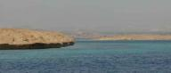
|
|
|

Suakin
» exacte locatie
We hadden weinig idee van wat we konden verwachten in Sudan. Ben nog
nooit iemand tegengekomen die er op vakantie is geweest en verder ken
ik alleen het oorlogsnieuws van het journaal. Eerst hebben we een paar
dagen bij kleine eilandjes doorgebracht. Helemaal verlaten op een paar
kamelen na, maar wel erg leuk voor Siebe om rond te lopen. Hij was
helemaal enthousiast over 'krach' (krab) en 'vogel'.
Daarna zijn we doorgevaren naar Suakin, een klein plaatsje op het
vaste land en een totaal andere wereld. Terwijl de rest van de wereld
overal gemotoriseerde voertuigen voor gebruikt, is hier de voornaamste
krachtbron de ezel. Door de hobbelige straatjes rijden karren met
brood, groente of watertanks die voortgetrokken worden door ezels.
Geiten lopen los op straat, er bestaan nog zeilende visbootjes en de
gebouwen zijn allemaal in meer of mindere staat van verval door het
harde Rode Zee klimaat. Een dorpje dat nog zo origineel is en weinig
beinvloed door de Westerse wereld hebben we nog niet vaak gezien. Het
is geweldig om hier een paar dagen rond te kunnen lopen. En Siebe
leert dagelijks nieuwe woorden. Hier zijn daar onder andere 'ejel'
(ezel) en 'eig' (geit) bijgekomen.
De Rode Zee staat bekend om zijn felle tegenwinden voor degene die
noordwaarts varen. Dat betekent dat je verder moet zo gauw als er even
geen of weinig wind staat. Morgen gaat de wind liggen voor een paar
dagen en wij grijpen die kans om weer een flinke slag naar het noorden
te maken. Hoe ver we komen blijft natuurlijk een verrassing, maar we
denken dat Egypte haalbaar moet zijn.
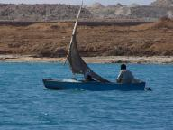
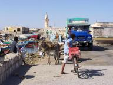
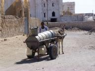
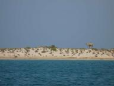
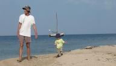
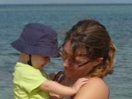
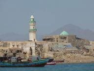
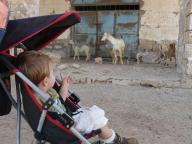
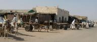
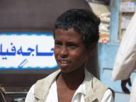
|
|
|

|

|
|
|